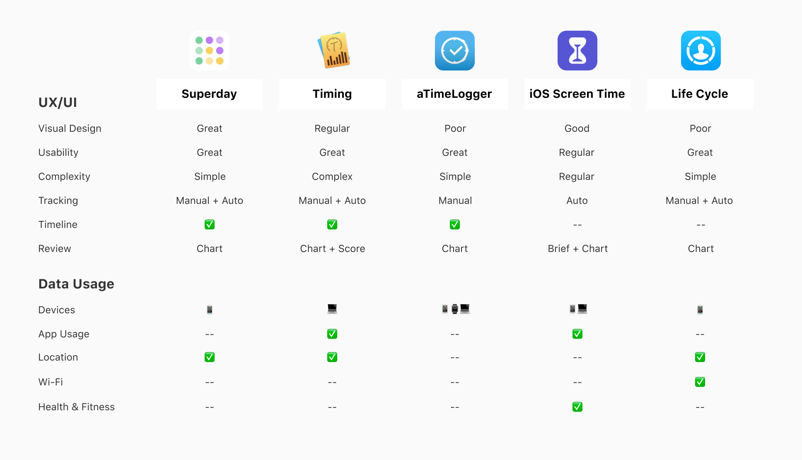
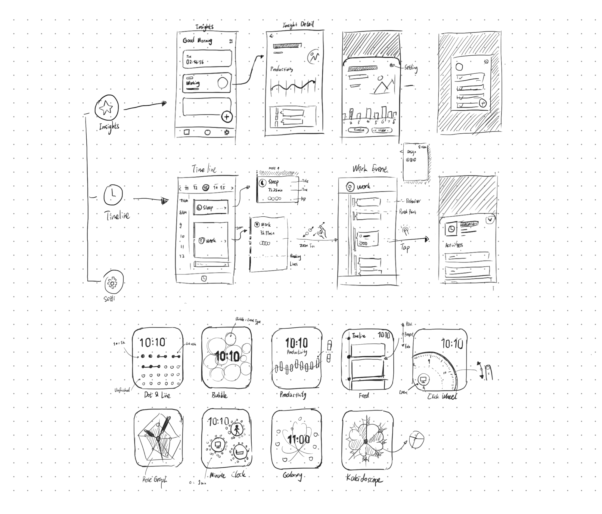

“Quantified-self” means to track daily lives with proficient and available technology to develop
self-knowledge, and improve productivity, health, and work-life balance. However, it is based on
continuous time-logging that requires extreme perseverance.
This project brings the idea of mapping out the entire daily routine by encapsulating data from other
apps. It builds a hub for quantified-self and gives inspiring reviews for us automatically.
Inspiration
I was first fascinated by the features of smartwatches. But all of them just don’t add up to
formulate a whole purpose and makes smartwatches still alternative devices.
Reconsidering the most used apps on my watch, I realized that exercise, to-do list, sleep monitor is
all
related to how I spend my time, in other words, my daily routine.
“But are we getting the full potential of a smart device in telling time?”
Time-logging Research
The Book: Strange Life
The Russian Scientist Alexander Lyubishchev had invented his time-counting system and practised for
56 years with paper and pencil. His biography tells us the benefits and methodology to get a clear
perception of time-spending.
Timeline experiment
I tried to apply Lyubishchev’s method and illustrated daily routines for my friends and me. It was
refreshing
to sit down with the interviewees and review their timeline.
Insights
Create Friendly Timeline with Mulitile Devices
Timeline unveils user patterns. Users often overrate working hours and underestimate leisure
time. Reviewing the graph exposed indiscoverable patterns like distractions on work.
Digital devices cover most of our time. Even some older user who doesn’t use computers could
use
the location data to recall events accurately.
Manually time-tracking is painful. The user would quickly feel frustrated once they forget to
log.
Natural language is better than timestamps. Some software provided complex, unorganized data.
But
we prefer to describe an event in a semantics sentence.
Building Time Line the Right Way
I first conducted a competitive audit to lay out all kinds of data available in other time-tracking apps.

Events, Behaviours and Activities
Previous research shows how people described their time-spending. I came up with the idea of
defining a
behaviour with a start, process and end with different activities. There are three layers in this
system:
Events, Behaviours, and Activities.

Providing Insights
Quantified-self is not completed without valuable review and feedback. I designed “highlights” to
automatically present information on productivity, sleep, fitness, distractions, and memorable
moments.
Home and Settings
The home screen shows all the reviews and the current event. The users could adjust events in
settings. The app would also turn to the dark mode in the sleeping event.
Productivity and Health
They get data from apps of Pomodoro, calendar, exercise and health monitor. It is designed to use
simple words and sentences to describe the key insights and provide charts on the detailed view.
The
users could set goals and track their status.
Memorable Moments
It captures groups of photos or videos taken in a day and chronologically displays them or create
a
visual routine of your highlights. This revives the mental model of how people recall their
events
in the interview.
Timeline
This is a direct and straightforward approach to all the activities. Power users could also tap
for
more details in each section. It also shows people how the data from other apps were used.
Back to the watch
As for “how we read the time on a smartwatch”, I designed the watch face that shows current time and task. Timeline is also available to see previous events of the day.
My Takeaways
Design for online-offline balance. This project enables me to take a deep dive into how people
interact with their devices. Meanwhile, the tech giants are announcing “screen time monitor” everywhere.
I
took my first exploration and practice on the design for unplugging.
A review is just as significant as planning. While we all take notes on tasks in advanced, we
often
forget about reflection. An inspection improves us and gives insights.